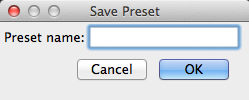
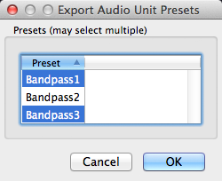
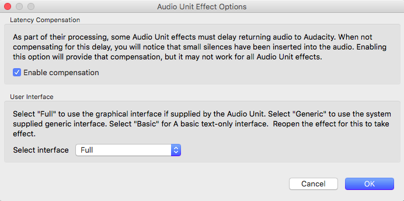

Effect Menu: AudioUnit
Audio Unit (AU) is a system-level plug-in architecture provided on Mac computers.
It supports real-time preview.
Import/export of presets is supported (see the description below of how it works) and the saving of presets for use in Audacity only.
Adding Audio Unit effects
For detailed instructions on installing Audio Unit plug-ins for Audacity see: Installing Effect, Generator and Analyzer plug-ins on Mac OS X/macOS.
| Please note that not all of the Audio Unit effects that Apple supplies can be enabled in Audacity.
They will show listed as available in the New section of the Plug-in Manager but if you try to enable them you will get an error message telling you that they failed to register. This is an Apple issue and not an Audacity bug. This only affects a few of the Audio Unit plug-ins: AUScheduledSoundPlayer, AUMultiSplitter, AUMultiChannelMixer, AUMixer3D, AUMIxer, AUMatrixMixer, AUAudioFilePlayer and AUSpeechSynthesis. |
Saving, Exporting and Importing Audio Unit Effect Presets
Save Preset...
To save the current effect settings as a User Preset, select from the Manage menu  in the effect dialog which brings up the following dialog:
in the effect dialog which brings up the following dialog:
- 
Type a name for the preset then click after which the saved preset will appear in the "User Presets" list in the Manage menu.
Export...
Each preset for Audio Unit effects is exported to a separate ".aupreset " file at /Users/<yourUserName>/Library/Audio/Presets/Apple/<effectName>/. A presets file lets you move settings for a particular effect between computers.
To export a saved User Preset, select from the Manage menu in the effect dialog which brings up the following dialog:
- 
Select the user preset(s) you want to export then click to export each selected preset to a file. If there is only one preset in the list you must still select it, or nothing will be exported.
Import...
Select from the Manage menu  in the effect dialog which brings up the following dialog:
in the effect dialog which brings up the following dialog:

Select the preset(s) you want to import then click to import each preset file as a User Preset.
Importing one or more presets does not load new settings into the effect. You must select one of the imported presets from in the Manage menu to load its settings into the effect.
Audio Unit Effect Options
In the effect's dialog, click the Manage  button then choose Options...
button then choose Options...  to bring up the dialog illustrated below. When you change the options in this dialog, the changes apply only to the current effect that's open. All other Audio Unit effects will remain at the default options shown below until you change their options.
to bring up the dialog illustrated below. When you change the options in this dialog, the changes apply only to the current effect that's open. All other Audio Unit effects will remain at the default options shown below until you change their options.
- 
- Latency Compensation: This setting (enabled by default) compensates for waveform delay caused by Audio Unit effects which preload audio data to a buffer. Compensation may not work in all cases, and for it to work, any compensation or latency reporting settings in the effect itself must be enabled. If compensation fails or if this Audacity setting is unchecked, effects that buffer audio will insert silence at the start of the processed selection and remove a corresponding amount of audio from the end of the selection. Enabling or disabling compensation is effective immediately.
- User Interface: The "Full" setting, enabled by default, allows most Audio Unit effects to display a graphical (instead of a plain text) interface. If you change this setting you must close the settings dialog, then close and reopen the effect to see the change.